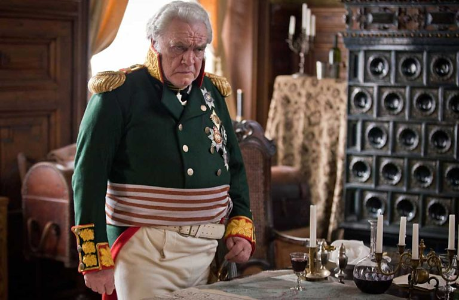
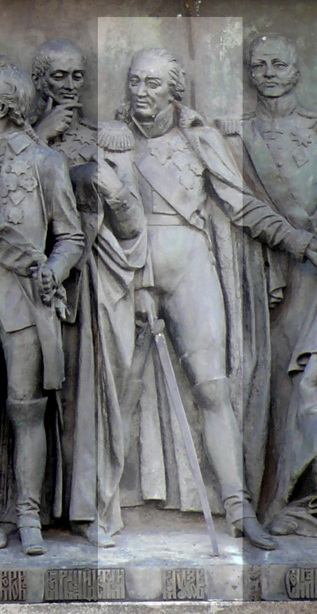

행운(?)의 쿠투조프 (3)
게시: 2020-06-29T06:30:20+09:00
이하는 랑쥬롱이 그의 비망록에 남겨놓은 쿠투조프에 대한 평가를 거의 그대로 옮겨 놓은 것입니다. 굉장히 악의적인 표현이 많습니다만, 아마 사실이 대부분일 것 같다는 생각이 듭니다.
"쿠투조프처럼 기백은 넘치지만 별 개성이 없는 인물이 드물 것이다. 수완과 교활함의 그렇게 조합됨과 동시에, 실질적인 재주가 보잘 것 없으면서 거기에 도덕성까지 결여된 인물도 찾기 어려울 것이다. 기억력이 아주 비상하고 배운 것도 많으면서, 보기 드문 매력을 가지고 있었다. 남들과의 대화를 그토록 재치있게 이끌어나가는 재주가 있었고, 매우 온화한 성격이었다. 그 온화함은 조금 가식적인 것이었지만 어차피 그런 것에 속아넘어가는 것을 더 좋아하는 사람도 많았다. 쿠투조프의 매력은 바로 그런 점들이었다. 그는 화가 났거나 상대방이 하찮은 인물이라고 판단되면 마치 농노에게나 어울리는 그릇된 난폭함을 보여주었고, 그에게 호의를 가졌다고 판단된 사람에게는 비굴할 정도로 몸을 낮추었다. 그는 말할 수 없을 정도로 게을렀고, 모든 것을 압도하는 무관심, 정말 혐오감이 드는 이기적 태도, 경멸을 넘어 구역질이 날 정도의 방종함을 가진 사람이었는데, 거기에 더해 돈벌이라면 아무런 자제력 없이 덤벼들었다.
그는 확실히 전쟁 경험이 많은 장교로서 작전 전략과 전황을 평가할 정도의 위치에 있는 사람이었다. 그는 쓸만한 조언과 헛소리를 구분할 줄 알았고 언쟁을 벌일 때 제대로 된 선택을 할 줄도 알았다. 그는 제대로 된 판단을 내리는 사람이었으나 그 능력은 결정 장애와 무관심, 그리고 육체적 피로 때문에 대개 마비되어 있어서, 아무런 관측도 명령도 하지 않는 경우가 많았다. 전투가 한창일 때도 그는 마치 바윗덩어리처럼 움직이는 법이 없었는데, 그가 유일하게 몸을 움직이는 경우는 총알이 스쳐 날아가는 소리가 근처에서 울리면 성호를 긋는 정도 뿐이었다. 그는 상황을 수습할 능력도 없었지만 그럴 생각 자체를 하지 않았다. 그는 군 부대의 위치를 적절히 변경할 생각은 아예 하지 않았다. 그는 전장을 직접 정찰하는 경우가 전혀 없었고, 적은 물론 아군의 위치도 조사하지 않았다. 그가 원정 중에 자기 자신의 텐트 위치 말고는 아무 것도 모른 채 원정 작전 3~4개월을 지내는 것을 내가 직접 보기도 했다.
그는 뚱뚱하고 덩치가 커서 말 안장에 오래 앉아있을 수가 없었다. 피로 때문에 그는 항상 기운이 없었다. 1시간 정도만 몸을 움직여도 - 그 1시간이 그에게는 100년처럼 느껴졌던 모양인데 - 기진맥진하여 아무런 생각 자체를 할 수가 없었다. 동일한 나태함은 그의 직무실에도 만연했다. 그는 깃털펜을 손에 쥘 수도 없었다. 그 결과, 그의 부하들과 대리인, 비서들은 아주 그를 가지고 놀았다. 확실히 쿠투조프 자신은 그의 부하들보다 훨씬 똑똑하고 명석한 사람이었으나 그의 부하들의 서류작업을 감독하고 검토할 수가 없었으며 자기가 구술하는 대로 받아쓰게 하는 것도 불가능했다. 그는 귀찮은 서류작업을 하기 싫은 나머지 부하들이 뭐라고 적어가지고 왔건 간에 그냥 얼른 서명을 해버리고 말았다. 그런 결재는 오전 중에 아주 간단히 처리해버리고 말았는데, 이는 일개 군을 총괄하는 지휘관의 업무 부담을 그는 도저히 감당할 수가 없기 때문이었다. 그는 늦잠을 자고 일어나 과식을 했고 오찬 후에는 꼭 3~4시간 낮잠을 잤다. 그렇게 일어난 뒤에도 제 정신을 차리려면 2시간 정도가 더 필요했다. 저녁에는 모든 시간을 애정 행각에 할애했고, 그럴 사정이 아닐 때면 애정 행각에 대한 생각을 하며 지냈다. 그의 여자들은 그에게 절대적이고도 추문에 가까운 영향을 끼쳤다. 쿠투조프 본인이 나에게 직접 말하기를, 과거 젊은 시절 독일을 여행할 때 독일 여배우와 정분이 나서 그 극단을 따라다니며 그 여배우에게 대사를 알려주는 역할을 했다고 했다. 쿠투조프는 취향도 지저분했고 생활 습관도 지저분했으며, 몸도 지저분한데다 일도 지저분하게 했다. 이 늙고 비대한 애꾸눈 사내에 대해 여자들이 발휘하는 영향력은 사회적으로 우스운 정도에 그치지 않았다. 군 지휘관에게 그런 약점이 있다는 것은 위험하기 짝이 없는 일이었다. 그는 여자들에게 비밀을 지키는 일이 없었고 그 여자들의 부탁을 거절하는 일도 없었으니 그로 인해 발생하는 불편한 일들은 쉽게 상상할 수 있을 것이다.
하지만 이런 쿠투조프가, 그렇게 행동거지와 원칙에 있어 비도덕적이고 군의 수뇌로서는 그저 이류에 불과했음에도 불구하고, 프랑스의 주교 재상인 마자랭(Mazarin)이 그의 장군들에게 요구했던 바로 그 자질을 가지고 있었다. 바로 행운이었다. 그에게 행운이 따르지 않았던 경우는 아우스테를리츠 뿐이었는데, 그 전투의 참극은 사실 그의 잘못이라고 할 수는 없었다. 행운은 일관적으로 그에게 미소를 지었다. 1812년의 그 기적적인 작전은 이 모든 것에서 있어서 영광스러운 절정이라고 할 수 있었다."

(BBC에서 제작한 2016년 미니시리즈 '전쟁과 평화'에서의 쿠투조프입니다. Brian Cox가 열연했습니다. 톨스토이가 쓴 대작 '전쟁과 평화'에서는 쿠투조프가 거의 성인에 가까운 지도자로 묘사됩니다. 다만 쿠투조프에게는 딸들만 있었을 뿐 아들이 없어서, 당시 러시아 법에 따라 그의 작위와 유산이 모두 톨스토이 가문으로 귀속되었다는 점을 염두에 두어야 할 지도 모르겠습니다.)
(본문과는 아무 상관없습니다만 그냥 예뻐서 올립니다. BBC '전쟁과 평화'에서 나타샤 로스토바 역할을 맡은 Lily James입니다. 국내에는 영화 Baby Driver로 잘 알려졌지요. )
글쎄요, 쿠투조프에 대한 랑쥬롱의 평을 한줄로 요약하자면 실력은 하나도 없는 장군이 순전히 운이 좋아서 성공했다는 것입니다. 여러분도 동의하시는지요 ?
저는 운이라는 것을 믿습니다. 그러나 꾸준한 운이라는 것은 믿지 않습니다. 누구든 어쩌다 운이 좋아서 성공하는 경우는 있습니다. 그러나 그 어떤 누구도 순전히 운이 좋아서 계속 성공하는 경우는 없다고 저는 믿습니다. 쿠투조프가 젊을 때부터 수보로프 뿐만 아니라 예카테리나 2세와 파벨 1세의 총애를 받았던 것은 분명히 그가 총명하고 유능했기 때문입니다. 그 점은 쿠투조프를 좋지 않게 보았던 랑쥬롱도 인정하고 있습니다.
랑쥬롱이 쿠투조프의 단점이라고 나열한 것들도 가만히 보면 그의 유능함을 간접적으로 보여주는 사례들입니다. 특히 그가 부하들의 서류를 전혀 검토도 하지 않고 대충 서명해버렸다는 것은 그의 게으름을 보여주기 위해 든 예이지만, 저러고도 아무 문제가 없었다는 것은 반대로 쿠투조프가 유능하고 믿을 만한 부하들로 주변을 가득 채우고 있었다는 것을 뜻합니다. 즉, 그가 사람보는 눈이 정말 뛰어났다는 증거지요. 그가 전장을 직접 둘러보지 않은 것은 지도와 부하들의 보고만 듣고 충분한 정보를 파악할 수 있었다는 이야기지요. 그가 작전 중에 군 부대의 배치를 전혀 바꾸지 않았다는 것은 처음에 배치한 위치가 딱 좋았기 때문이었을 수도 있습니다.
이렇게 랑쥬롱의 회고록에서 파악되는 쿠투조프는 전형적인 '똑게' 상사, 즉 똑똑하고 게으른 상사입니다. 직장인이 만날 수 있는 최고의 상사이지요. 아마도 그래서 적어도 사병 레벨에서는, 또 상트 페체르부르그와 모스크바의 귀족들은 다 그를 좋아했던 것 같습니다.
그러나 당장 그의 지휘를 받아야 하는 러시아 장군들과 장교들은 꼭 그렇게 생각하지는 않았습니다. 그 이야기는 다음에 보시겠습니다.

(러시아 건국 1천년을 기념하여 세워진 '러시아 천년(Millennium of Russia)' 기념상에 당당히 새겨진 쿠투조프의 모습입니다. 쿠투조프라면 그 정도의 자격은 충분하다고 봅니다. 오른쪽 눈은 온전한 모습으로 묘사되었군요... 쿠투조프의 생전 초상화를 보면 쿠투조프도 그렇게 그려지길 원했을 것입니다.)
Source : 1812 Napoleon's Fatal March on Moscow by Adam Zamoyski
https://en.wikipedia.org/wiki/Mikhail_Kutuzov
https://en.wikipedia.org/wiki/Millennium_of_Russia
https://thejns.org/downloadpdf/journals/neurosurg-focus/39/1/article-pE3.pdf
https://www.bbc.co.uk/blogs/writersroom/entries/5bbcb0cb-e28b-4605-894c-d9146f2cecb5
https://ru.wikipedia.org/wiki/Штурм_Очакова#/media/File:January_Suchodolski_-_Ochakiv_siege.jpg
{kind=link}
https://ief-usfeu.ru/en/kutuzov-kratkaya-biografiya-general-feldmarshala-kutuzov/